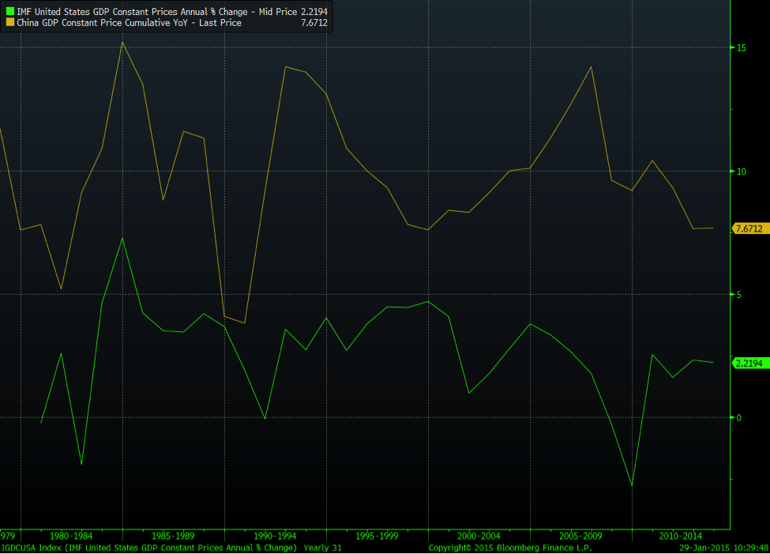

The most important story of 2014 that most people ignored was the Chinese economy overtaking the US economy. (This is using the purchasing power parity metric, which incorporates differences in the price of goods, but the Chinese economy will overtake on other metrics soon enough.)
This shouldn’t have caught anyone by surprise; US growth has stagnated while Chinese growth has continued to do pretty well (the chart below shows inflation-adjusted economic growth rates in China vs. the US since 1978). The US has become less competitive globally—for example, other countries have surpassed our education system, and we have structural and demographic challenges other countries don’t and that create significant expenses.

The historical track record of the largest economy being overtaken by another is not good. Sometimes it’s violent. (For example, Germany and the UK in 1914. Though neither were the largest in the world, the world was less globalized. They were the largest in the region and very focused on each other.) Sometimes it’s a long, slow slide of denial into stagnation and decreasing relevance.
It’s almost unthinkable for most people born in the US in the last 70 or so years for the US not to be the world’s superpower. But on current trajectories, we’re about to find out what that looks like. [1] The current plan seems to be something like “managed decline”, or gradual acceptance of reduced importance.
The US gets huge advantages from being the world’s largest economy (as mentioned earlier, other countries wanting this sometimes leads to major conflict). For example, our currency is the most important currency in the world, and we can do things like run a trillion dollar deficit without anyone getting too concerned. People generally have to buy energy (oil) in our currency, which adds a great deal of support (though we’ve already seen the very beginnings of the PetroYuan). Also, we get to have the world’s most powerful army.
The current business model of the US requires the dollar to be the world reserve currency, though the Chinese currency is rapidly becoming a viable alternative. At some point, China will relax its currency controls, allowing trade and offshore investment to grow rapidly. The Renminbi (RMB) will probably rise in value (though some people think the opposite will happen in the short term) and China will become an important financial center.
The most critical question, speaking as a hopeful US citizen, is whether or not it’s possible for one country to remain as powerful as another with four times less people. The US has never been the world’s largest country by population, but it has been the largest economy, and so it’s clearly possible for at least some period of time.
How has the US done this? One important way has been our excellence in innovation and developing new technology. A remarkable number of the major technological developments—far in excess of our share of the world’s population—have come from the US in the last century.
The secret to this is not genetics or something in our drinking water. We’ve had an environment that encourages investment, welcomes immigrants, rewards risk-taking, hard work [2], and radical thinking, and minimizes impediments to doing new things. Unfortunately we’ve moved somewhat away from this. Our best hope, by far, is to find a way to return to it quickly. Although the changes required to become more competitive will likely be painful, and probably even produce a short-term economic headwind, they are critical to make.
The US should try very hard to find a way to grow faster. [3] I’ve written about this in the past. Even if there weren’t a competitor in the picture, countries historically don’t do well with declining growth, and so it’s in our interest to try to continue to keep growth up. It’s our standard advice to startups, and it works for organizations at all levels. Things are either growing or dying.
The other thing to try to do is figure out a way to coexist with China. Absent some major surprise, China and the US are going to be the world superpowers for some time. The world is now so interconnected that totally separate governments playing by different rules are not going to work (for example, if people can manufacture goods in China without regard for environmental regulations, they’ll be cheaper than US goods, but they’ll harm the environment for people in the US eventually). Instead of the normal historical path of increasing two-way animosity until it erupts in conflict, maybe we can find a way to both work on what we’re really good at and have governments that at least partially cooperate.
Thanks to Patrick Collison, Matt Danzeisen (especially to Matt, who provided major help), Paul Graham, and Alfred Lin for reading drafts of this.
[1] As a related sidenote, “exceptionalism” in the US has become almost a bad word—it’s bad to talk about an individual being exceptionally good, and certainly bad to talk about the country as a whole being exceptional. On my last visit to China, the contrast here was remarkable—people loved talking about how amazing certain entrepreneurs were, and the work the country as a whole was doing to make itself the best in the world.
The other stark contrast is how much harder people in China seem to work than people here, and how working hard is considered a good thing, not a bad thing.
[2] One thing that I’ve found puzzling over the last ten or so years is the anger directed towards people who choose to work hard. This is almost never from actually poor people who work two minimum wage jobs (who work harder than all the rest of us, pretty much) but from middle class people. It’s often somewhat subtle—“It’s so stupid that these people play the startup lottery. What idiots. They should just consult.” or “Startups need to stop glorifying young workers that can work all day and night”—but the message is clear. My explanation is that this is simply what happens in a low-growth, zero-sum environment.
[3] A significant and relevant headwind for US growth is that current US policy often encourages investment and job growth outside the US; domestic companies can borrow at low rates because of 0% Fed lending, build factories (and create jobs) in other countries, and then hold/reinvest those profits offshore rather than pay high taxes repatriating their funds.